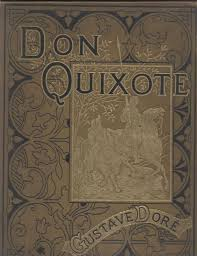

In To Thin Air
Jon Krakauer, author and mountain climber, is hired by Outside Magazine to write an article about the commercialism on Mount Everest. Krakauer decides he wants to climb the mountain, and joins the most disastrous Everest expedition in history.Krakauer joins the climbing service called Adventure Consultants, guided by Rob Hall. The guide service is intended to speed up the acclimatization process and guide the climbers successfully to the summit of Mount Everest The climb is structure into camps: Base Camp, Camp One, Camp Two, Camp Three and Camp Four. After spending weeks at Base Camp, the group makes a number of trips up to the other camps to speed up the acclimatization process. In the beginning of May, the gr oup makes a summit push.Throughout the climb, Krakauer details his teammates, his guides and other expeditions on the mountain. He tries to piece together a continuous timeline of the events that take place in the weeks they are on the mountain.
Into the HEART OUR WORLD
The journey to the center of the earth is a voyage like no other we can imagine. Our planet appears tranquil from outer space. And yet the arcs of volcanoes, the earthquake zones, and the auroral glow rippling above our heads are testimony to the remarkable happenings within the earth’s core. For thousands of years these phenomena were explained in legend and myth. Only in recent times has the brave new science of seismology emerged. One hundred and fifty years after the extraordinary, imaginative feat of Jules Verne's Journey to the Center of the Earth, David Whitehouse embarks on a voyage of scientific discovery into the heart of our world.Seismologists today reveal a planet astonishingly buried within a planet. We watch as supercomputers convert signals from the ground into three-dimensional scans of subterranean continents. We will visit laboratories where scientists attempt to reproduce the intense conditions at the center of the Earth, travel down the throat of a volcano, look into the deepest hole ever drilled, and imagine a voyage through enormous crystals of iron...all at the center of our incredible Earth.
IN THE HEART OF THE SEA
In the Heart of the Sea: The Tragedy of the Whaleship Essex is a book by American writer Nathaniel Philbrick about the loss of the whaler Essex in the Pacific Ocean in 1820. The book was published by Viking Press on May 8, 2000, and won the 2000 National Book Award for Nonfiction.But that real-life tale – that of a vengeful whale taking out a whaling ship – has now been adapted in true swashbuckling style by Ron Howard. The film, In the Heart of the Sea (released on Boxing Day), is based on Nathaniel Philbrick's maritime history book of the same name. ... The whale struck the Essex.Winner of the National Book Award, Nathaniel Philbrick's book is a fantastic saga of survival and adventure, steeped in the lore of whaling, with deep resonance in American literature and history.The most powerful theme from Moby-Dick is Man's hubris towards the mastery of the natural world. Man believes himself to be supreme over all creatures and that his power and skill bends nature to his will. This theme is the best one illustrated in In the Heart of the Sea.
KING SOLOMONSMINES MINES
King Solomon's legendary “lost” gold mine, the biblical Ophir that yielded much of the fabulous wealth of the Kingdom of Israel nearly 3,000 years ago, may have been “found” in Saudi Arabia.After American archaeologist Nelson Glueck explored the region in the 1930s, he announced he had found the real-life "King Solomon's Mines" in the biblical kingdom of Edom. ... "The mines are definitely from the period of King Solomon," archaeologist Erez Ben-Yosef of Tel Aviv University, said in a statement this week.It describes: '77 tables of gold, and their gold was from the walls of the Garden of Eden that was revealed to Solomon, and they radiate like the radiance of the sun and moon, which radiate the height of the world. ' 'The number of stones was forty-six thousands and the number of pearls was the same.An evil, impossibly ancient hag named Gagool is his chief advisor. She roots out any potential opposition by ordering regular witch hunts and murdering without trial all those identified as traitors. When she singles out Umbopa for this fate, it takes all Quatermain's skill to save his life.
Treasure Island
The plot starts with a sailboat that has an old sailor named Billy Bones in it. He lodges in the rural Admiral Benbow Inn on England's Bristol Channel. He tells the innkeeper's son, Jim Hawkins, to keep a lookout for "a one-legged seafaring man". A former shipmate named Black Dog confronts Bones and engages with him.Robert Louis Stevenson wrote Treasure Island in 1881. It is set in the days of sailing ships and pirates and tells of the adventures of Jim Hawkins and his search for the buried treasure of an evil pirate, Captain Flint. ... The Squire and the Doctor decide to go and find the treasure and invite Jim to come along.In Robert Louis Stevenson's Treasure Island, the author writes in the style of a young man who must chronicle the events of a voyage overseas. In doing so, Jim Hawkins reveals little of his emotions even in the most emotionally charged parts, making the reader wonder if Jim feels so little.While the novel Treasure Island certainly influenced the way we think of pirates—and especially their presumed proclivity for burying treasure and marking it on secret maps—it's the 1950 movie adaptation of the book, directed by Byron Haskin, that gave us the archetypal image of pirates and pirate talk.
HARRY POTTER
Throughout the series, Harry is described as having his father's perpetually untidy black hair, his mother's bright green eyes, and a lightning bolt-shaped scar on his forehead. He is further described as "small and skinny for his age" with "a thin face" and "knobbly knees", and he wears Windsor glasses.humble, brave, and loyal. Harry will do anything for his friends, including risking his own life. He stands up for the weak (like Neville Longbottom) and is willing to take on the evil and powerful, from snobbish classmate Draco Malfoy all the way up to He Who Must Not Be Named.Harry Potter is an orphaned boy brought up by his unkind Muggle (non-magical) aunt and uncle. At the age of eleven, half-giant Rubeus Hagrid informs him that he is actually a wizard and that his parents were murdered by an evil wizard named Lord Voldemort.In the books, Hermione is described as having "bushy brown hair" and brown eyes. Her front buck teeth, already very large, grow uncontrollably in Goblet of Fire after she is affected by a spell cast by Draco Malfoy. ... In the films, her hair is less bushy and she always has regular teeth.In the epilogue to Harry Potter and the Deathly Hallows, which is set 19 years later, it's revealed that Harry married Ginny Weasley, Ron's sister, and they have three children.Daniel Radcliffe is 5'5" - shorter and stockier - in contrast to a taller, lankier Harry (5'8") in the books. Harry is also the same height as Hermione in the films.The costumes and descriptions. One of the main reasons that the series has become so loved is it's attention to detail and the costumes, clothing choices and descriptions of the characters. Think Harry's lightening-shaped scar, his broken glasses and his "mother's eyes".
Don Quixote
Don Quixote is a middle-aged gentleman from the region of La Mancha in central Spain. Obsessed with the chivalrous ideals touted in books he has read, he decides to take up his lance and sword to defend the helpless and destroy the wicked. After a first failed adventure, he sets out on a second one with a somewhat befuddled laborer named Sancho Panza, whom he has persuaded to accompany him as his faithful squire. In return for Sancho’s services, Don Quixote promises to make Sancho the wealthy governor of an isle. On his horse, Rocinante, a barn nag well past his prime, Don Quixote rides the roads of Spain in search of glory and grand adventure. He gives up food, shelter, and comfort, all in the name of a peasant woman, Dulcinea del Toboso, whom he envisions as a princess.On his second expedition, Don Quixote becomes more of a bandit than a savior, stealing from and hurting baffled and justifiably angry citizens while acting out against what he perceives as threats to his knighthood or to the world. Don Quixote abandons a boy, leaving him in the hands of an evil farmer simply because the farmer swears an oath that he will not harm the boy. He steals a barber’s basin that he believes to be the mythic Mambrino’s helmet, and he becomes convinced of the healing powers of the Balsam of Fierbras, an elixir that makes him so ill that, by comparison, he later feels healed. Sancho stands by Don Quixote, often bearing the brunt of the punishments that arise from Don Quixote’s behavior.
"Build with sass""
And Less
The Hofburg Palace is the former principal imperial palace of the Habsburg dynasty. Located in the center of Vienna, it was built in the 13th century and expanded several times. Empress Maria Theresa had a 17th-century opera house converted into the dance and concert halls now known as the Redoutensäle, forming the Redoute Wing. This 1763 oil painting by Martin van Meytens depicts the hall on the occasion of the wedding supper of Princess Isabella of Parma and Joseph II, Holy Roman Emperor, who were married on 5 October 1760.

All about is bootstrapping.
The img element is required as the last child tag of the picture declaration block.The img element is used to provide backward compatibility for browsers that do not support the picture element, or if none of the source tags matched.